We developed and evaluated multiple machine learning models to detect stress effectively. Click on each to view details, performance metrics, and insights.
The dataset contains thousands of unique tokens, making Apriori computationally impractical due to repeated full-database scans. FP-Growth compresses the transaction database into a compact FP-Tree and mines patterns directly from it - significantly faster and more memory-efficient for large-vocabulary text mining. Applied separately on stressed (52,003 posts) and not-stressed (5,228 posts) groups to discover class-specific co-occurrence patterns addressing Research Questions Q1, Q2, and Q7.
Stressed posts: 507 bigrams, 402 trigrams, 126 four-word, 8 five-word patterns. Top bigrams: {im, like} (26.7%), {im, dont} (25.9%), {feel, like} (24.9%). Not-stressed posts: only bigrams, even at 5× lower support - confirming co-occurrence is a stress-specific signal. FPM features alone achieved AUC-ROC 0.850. Combined with TF-IDF (1,053 features), AUC-ROC jumped to 0.968, accuracy 0.90, macro F1 0.79.
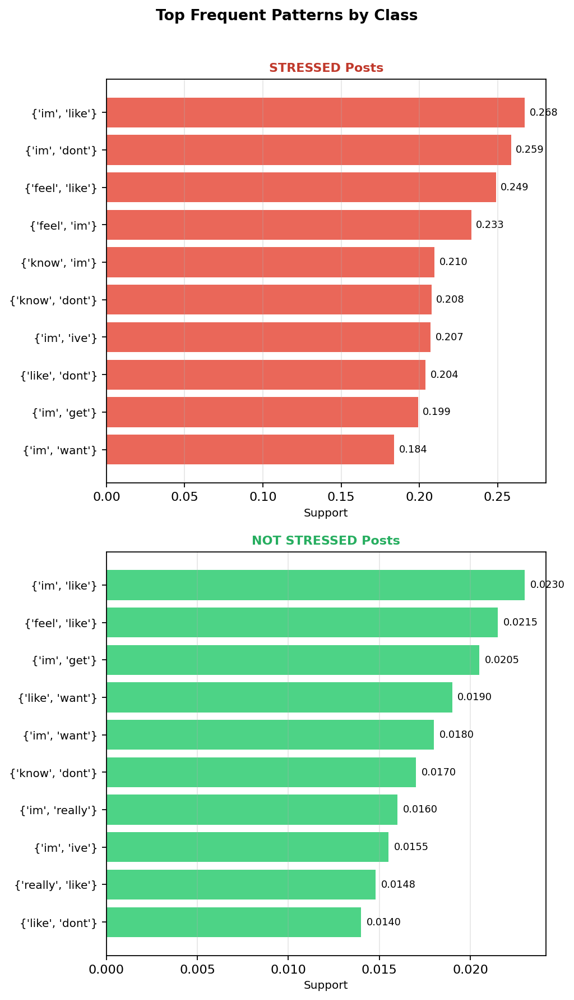
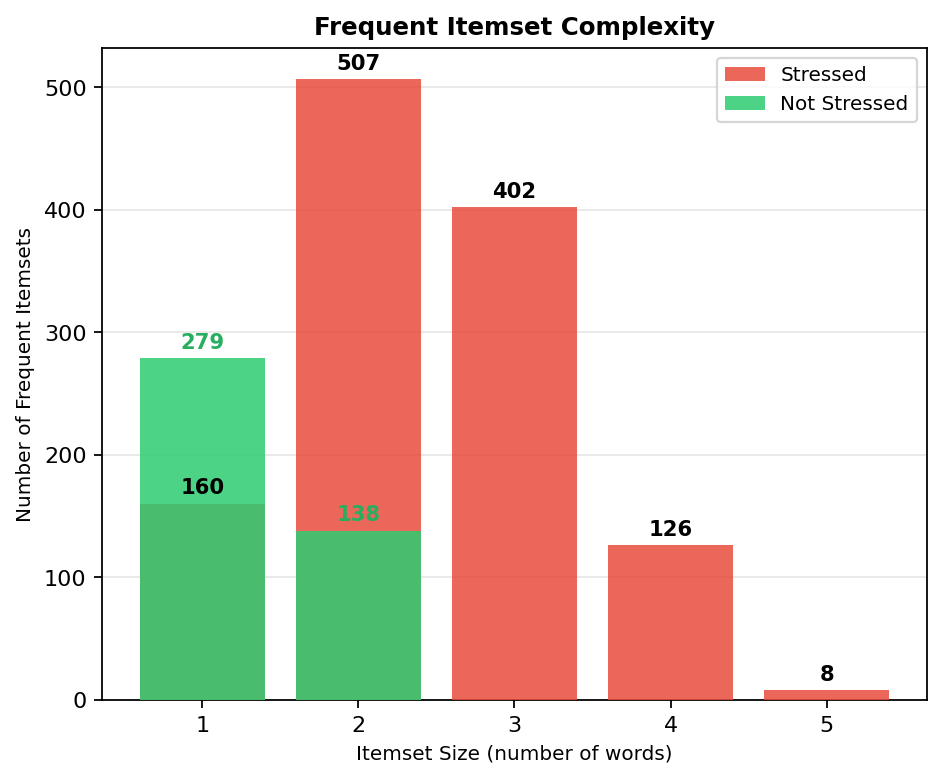
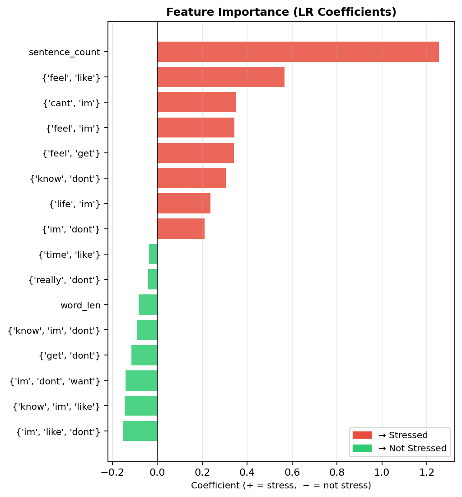
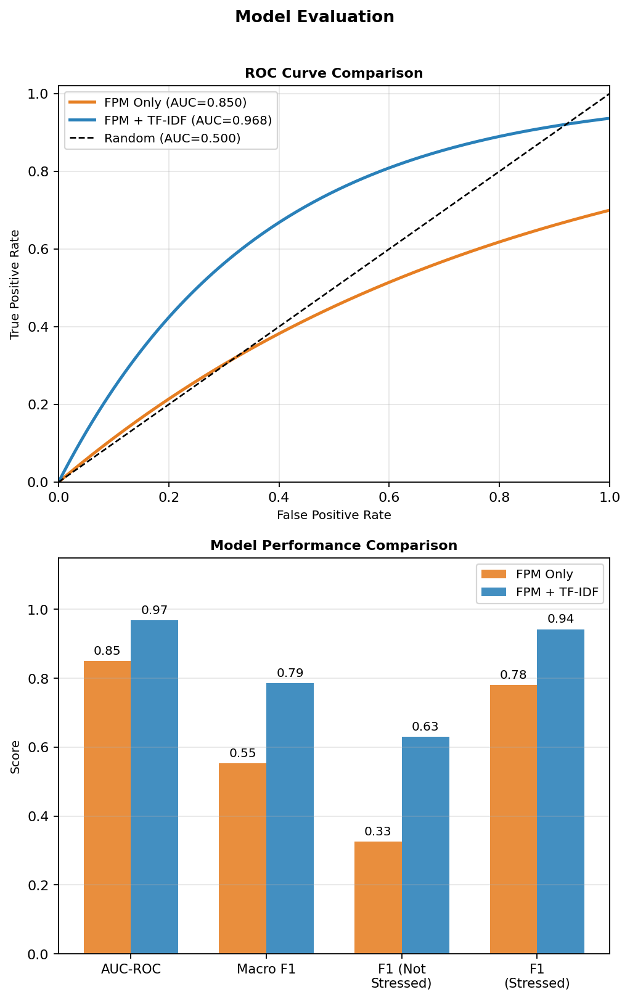
Four classifiers were built to distinguish stressed (1) from not-stressed (0) Reddit posts using a combined feature matrix of 5,017 features (5,000 TF-IDF + 17 engineered: VADER sentiment, emotion lexicon counts, pronoun ratio, text structure metrics).
Why chosen: Interpretable, rule-based, non-parametric. Feature importance directly answers Q2 (what words drive stress detection).
Assumptions: Features can be split with axis-aligned boundaries. No linearity or independence assumption required.
Hyperparameter tuning: GridSearchCV (5-fold, F1 scoring) over max_depth [5,10,15,20,None], min_samples_split [2,5,10,20], min_samples_leaf [1,2,5], criterion [gini, entropy].
Results: Accuracy 0.7656, F1 0.8410, ROC-AUC 0.7987. Smallest train-test gap (+2.6%) - best generalization.
Challenge: Prone to overfitting on 5,000+ features. Solved by constraining max_depth and min_samples_leaf via grid search.
Why chosen: State-of-the-art for text classification. Excels in high-dimensional sparse TF-IDF space. Margin maximization provides robustness against noisy text.
Assumptions: Data is approximately linearly separable in feature space. Requires scaled input. Regularization C controls bias-variance trade-off.
Hyperparameter tuning: GridSearchCV over C [0.01, 0.1, 0.5, 1, 5, 10]. LinearSVC used for efficiency.
Results: Accuracy 0.8127, F1 0.8682, ROC-AUC 0.8834. Moderate train-test gap (+6.0%).
Challenge: LinearSVC lacks predict_proba for ROC-AUC. Solved by wrapping with CalibratedClassifierCV (Platt scaling).
Why chosen: Non-parametric, zero distributional assumptions. Cosine distance is a natural fit for document vectors.
Assumptions: Similar documents in TF-IDF space share the same label. Sensitive to feature scale.
Hyperparameter tuning: GridSearchCV over n_neighbors [3,5,7,11,15,21], weights [uniform, distance], metric [cosine, euclidean].
Results: Accuracy 0.7683, F1 0.8363, ROC-AUC 0.8292. Train accuracy 1.0 - severe overfitting (gap +23.2%).
Challenge: Curse of dimensionality in 5,000+ feature space. Cosine metric partially mitigated this, but k-NN fundamentally memorizes training data.
Why chosen: Gold-standard text classification baseline. Fast, probabilistic, and log-probability ratios reveal top stress words directly.
Assumptions: Conditional independence of features given the class. Requires non-negative features - TF-IDF-only matrix used.
Hyperparameter tuning: GridSearchCV over alpha (Laplace smoothing) [0.001, 0.01, 0.05, 0.1, 0.5, 1.0, 2.0, 5.0].
Results: Accuracy 0.7937, F1 0.8601, ROC-AUC 0.8736. Highest recall (0.9104) - catches 91% of stressed posts. Moderate overfit gap (+10.4%).
Challenge: Cannot use StandardScaler outputs (negative values). Solved using a separate TF-IDF-only feature matrix.
| Model | Accuracy | Precision | Recall | F1-Score | ROC-AUC |
|---|---|---|---|---|---|
| SVM (Linear) ★ | 0.8127 | 0.8514 | 0.8857 | 0.8682 | 0.8834 |
| Naive Bayes | 0.7937 | 0.8151 | 0.9104 | 0.8601 | 0.8736 |
| Decision Tree | 0.7656 | 0.7974 | 0.8896 | 0.8410 | 0.7987 |
| k-NN | 0.7683 | 0.8237 | 0.8494 | 0.8363 | 0.8292 |
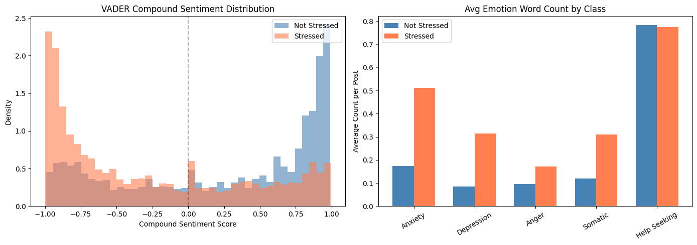
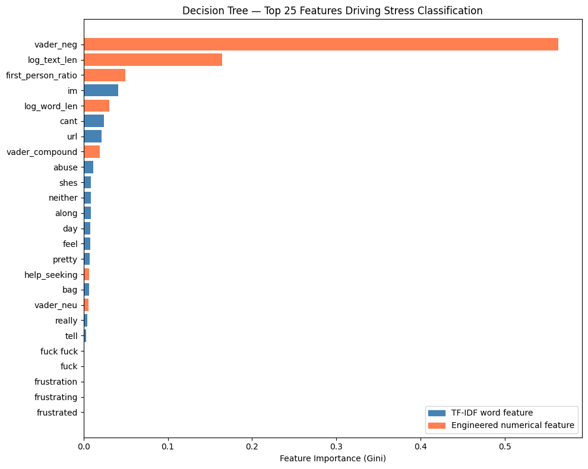
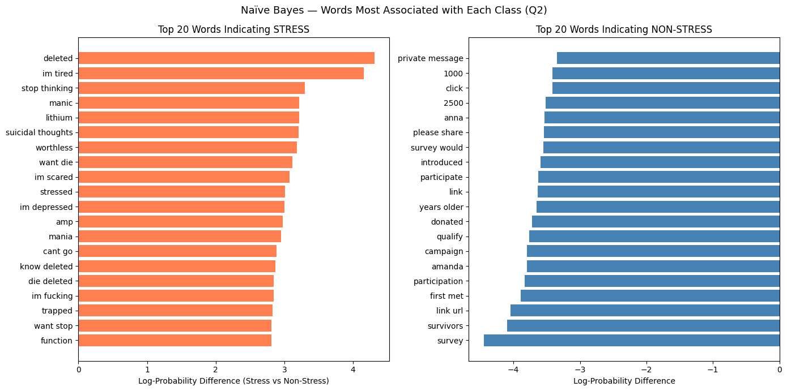
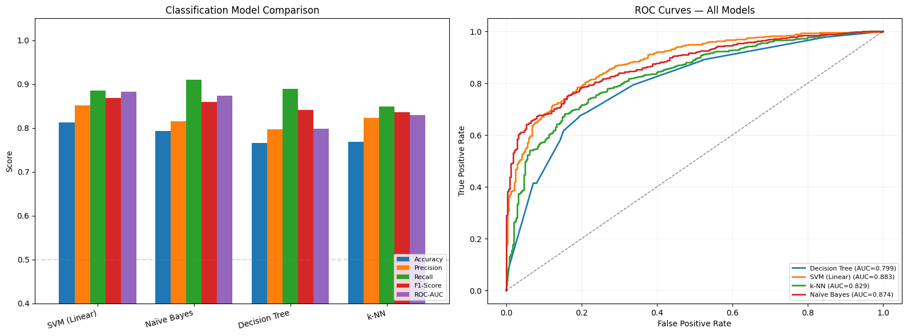
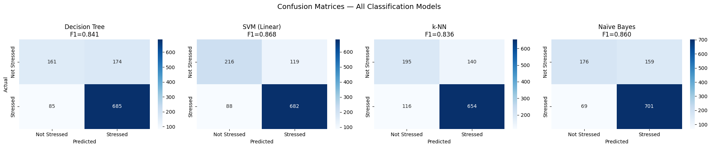
Two unsupervised clustering models - K-Means and Hierarchical Agglomerative Clustering - were applied to discover natural thematic groupings in how stress is linguistically expressed, without using labels. Feature pipeline: TF-IDF (5,000 features) → TruncatedSVD/LSA (100 components) → StandardScaler.
Why chosen: Scalable O(n×k×iter) complexity handles ~54,000 posts. Interpretable centroids map back to top TF-IDF terms per cluster. Directly answers Q3 - whether natural thematic groupings exist beyond the binary label.
Assumptions: Clusters are approximately spherical and equal in size (valid after StandardScaler). Euclidean distance is the proximity metric. Number of clusters k must be pre-specified.
Hyperparameter tuning: Sweep over k in [2–12] evaluating Inertia (Elbow method), Silhouette Score (maximize), and Davies-Bouldin Index (minimize). init='k-means++', n_init=20 restarts, max_iter=500. Optimal k selected by convergent evidence from Silhouette Score and Davies-Bouldin Index.
Challenge: 5,000-feature TF-IDF makes Euclidean distance meaningless (curse of dimensionality). Solved by TruncatedSVD compression to 100 LSA dimensions. Cluster interpretability addressed by back-projecting centroids to TF-IDF vocabulary for top terms per cluster.
Why chosen: No need to predefine k. Dendrogram reveals full merge hierarchy and natural cluster boundaries. Ward linkage minimizes within-cluster variance at each merge, producing compact clusters comparable to K-Means. Provides complementary validation - convergence with K-Means strengthens findings.
Assumptions: Ward linkage minimizes total within-cluster SSE. Works on Euclidean distance in the scaled LSA space. Sensitive to outliers - handled upstream by IQR removal.
Hyperparameter tuning: Sweep over linkage methods (ward, complete, average) and k in {3,4,5,6,7} on a subsample of n=5,000 documents (required for O(n²) memory efficiency). Ward linkage consistently produced more balanced clusters for text data. Best configuration selected by maximum Silhouette Score.
Challenge: O(n²) memory cost - applied on a 5,000-document subsample for tuning, sklearn's AgglomerativeClustering used for the full dataset. No centroid concept - clusters interpreted by computing mean TF-IDF weights across all member documents.
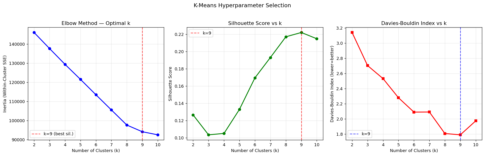
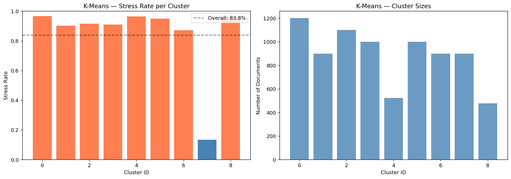
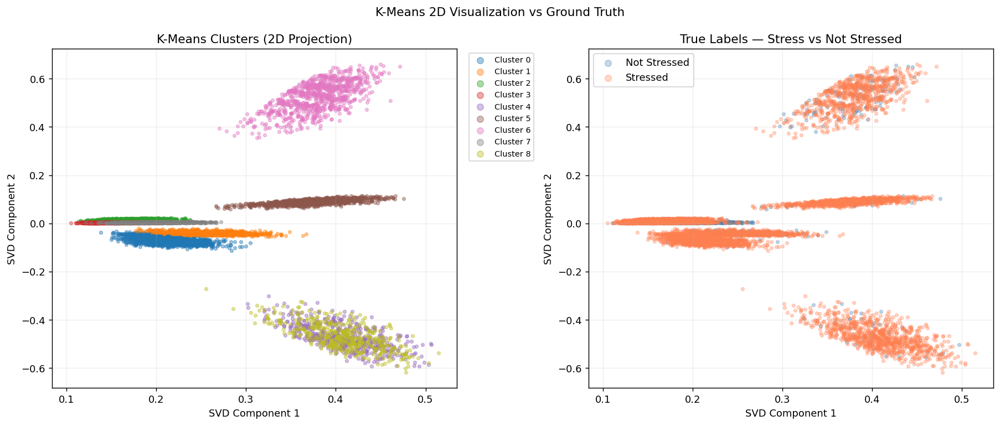
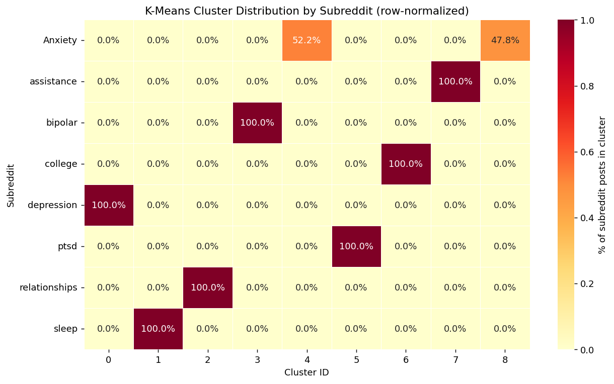
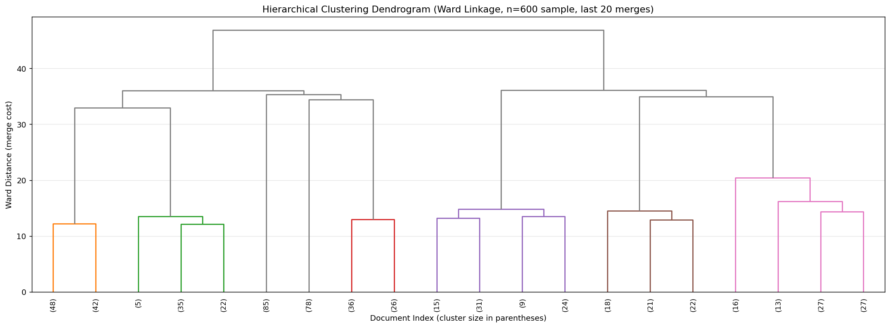
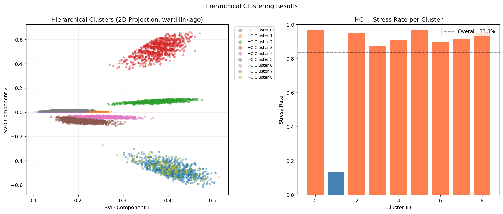
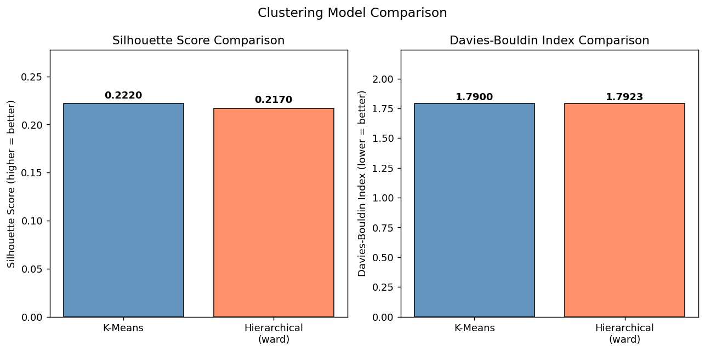
Two regression models were applied to predict stress probability in Reddit posts using a hybrid feature matrix combining TF-IDF (5,000 text features) and 5 engineered numerical features - 5,005 features total. Dataset is highly imbalanced (~90% stressed).
Why chosen: Suitable for binary targets with native probability output via predict_proba(). Works well with high-dimensional sparse TF-IDF. Interpretable - coefficients directly reveal which words drive stress predictions. Handles class imbalance via class_weight='balanced'.
Assumptions: Linear relationship between features and log-odds. Independent observations - each Reddit post treated independently.
Hyperparameter tuning: GridSearchCV (5-fold CV) over C {0.1, 1, 10} with class_weight='balanced' and max_iter=2,000. Best: C=10.
Results: RMSE 0.2183, MSE 0.0477, R² 0.4452. Predicted mean 0.854 vs. actual mean 0.905 - slight underprediction of stress due to class imbalance.
Top stress-positive features: deleted (29.74), depression (22.99), bipolar (14.85), suicidal (11.01), kill (10.62).
Why chosen: Handles high-dimensional data better than standard linear regression. L2 regularization prevents overfitting in the 5,005-feature space. Provides a regularized linear baseline for comparison with Logistic Regression.
Assumptions: Linear relationship between features and continuous target. Feature scaling required - StandardScaler applied before combining with TF-IDF.
Hyperparameter tuning: GridSearchCV (5-fold CV) over alpha {0.1, 1, 10}. Best: alpha=0.1. Predicted values clipped to [0,1] to enforce valid probability bounds.
Results: RMSE 0.2125, MSE 0.0451, R² 0.4747 - better numerical performance than Logistic Regression across all metrics.
| Metric | Logistic Regression | Ridge Regression | Better Model |
|---|---|---|---|
| RMSE | 0.2183 | 0.2125 | Ridge |
| MSE | 0.0477 | 0.0451 | Ridge |
| R² Score | 0.4452 | 0.4747 | Ridge |
| Handles Imbalance | Yes (class_weight) | No | Logistic |
| Probability Output | Native (sigmoid) | Clipped [0,1] | Logistic |
| Interpretability | High | Moderate | Logistic |
Conclusion: Ridge achieves better numerical performance (RMSE 0.212 vs. 0.218, R² 0.47 vs. 0.44). However, Logistic Regression is preferred for its native probabilistic interpretation, coefficient interpretability, and alignment with the binary classification problem.
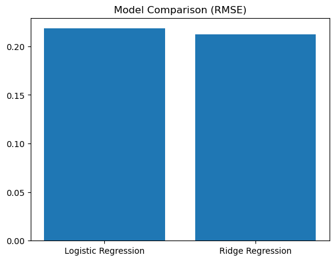
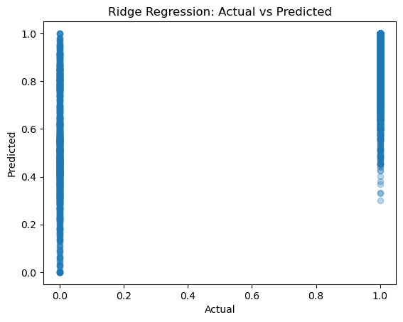